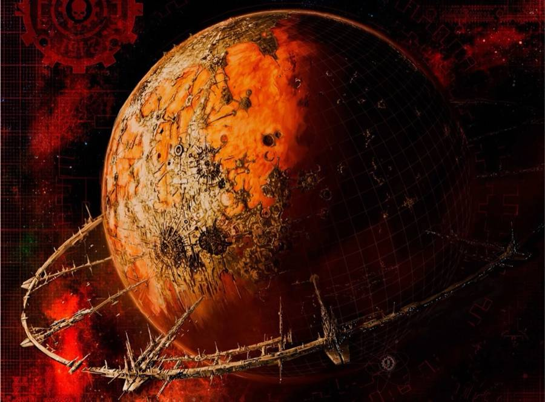

Omnissiah
| Omnissiah Avatar of the Machine God | |
|---|---|
The Icon Mechanicus, half skull and half machine, symbol of the Machine God Artwork © Games Workshop | |
| Faith | Cult Mechanicus |
| Other names | Machine God, Deus Mechanicus (the deity); the Omnissiah (its avatar) |
| The Trinity | The Machine God; the Omnissiah; the Motive Force |
| Domain | Knowledge, machinery and motion |
| Identified with | The Emperor of Mankind, by the Treaty of Olympus (orthodox) |
| Centre of worship | Mars and the forge worlds |
| Priesthood | The tech-priests of the Adeptus Mechanicus |
| Sacred goal | The Quest for Knowledge |
The Omnissiah is, in the faith of the Cult Mechanicus, the physical avatar of the Machine God or Deus Mechanicus, the deity who embodies and bestows all knowledge and all technology. The Machine God is held to be omniscient and omnipotent, and to govern every machine and every fact in the universe. Its avatar, the Omnissiah, is believed to be well disposed to mankind and to be the source of all human science. Orthodox doctrine identifies the Omnissiah with the Emperor of Mankind.[1][2]
The identification was the basis of the Treaty of Olympus, the pact by which Mars joined the Emperor's Imperium in the late 30th millennium. It allowed the priesthood of Mars to serve the Emperor without abandoning its faith, and it has allowed the Cult Mechanicus to coexist with the Imperial Cult, which worships the Emperor as the only god of mankind. The compromise satisfies neither faith completely, and doubt about it has run through the history of Mars. During the Horus Heresy (005–014.M31), a faction of the priesthood that denied the Emperor's divinity broke away to form the Dark Mechanicum.[1][3]
The worship of the Machine God is the faith of the Adeptus Mechanicus and the countless tech-priests, Skitarii and servitors of the forge worlds. Its rituals govern the use and repair of every machine in the Imperium.[2]
Doctrine
[edit]The Trinity
[edit]The Cult Mechanicus holds knowledge to be the manifestation of the divine in the universe, and therefore treats anything that contains knowledge, from a data-crystal to a battle tank, as sacred. Its theology recognises three divine principles:[1]
The Machine God
The Machine God is the immanent deity who governs all machinery and all knowledge. It is not a person in the ordinary sense, and tech-priests describe it in terms of laws, motion and information.[4]
The Omnissiah
The Omnissiah is the Machine God's avatar in the physical universe, who reveals its will to mankind and grants human beings their knowledge. Orthodox believers of the Cult Mechanicus identify the avatar with the Emperor of Mankind, though many within the Mechanicus doubt it, and similar doubts led to the Schism of Mars.[4][5]
The Motive Force
The Motive Force is the universal spiritual power by which all life and motion, mechanical or organic, continues to exist. It is most fully expressed in the machine spirits that the Cult believes to inhabit every machine.[4][5]
Machine spirits
[edit]The Cult teaches that every machine is inhabited by a spirit, an expression of the Motive Force, which must be honoured if the machine is to work. Tech-priests appease these spirits with prayers, sacred oils, incense and the chanting of litanies in binary cant before a device is used or repaired. A machine that fails is believed to have been offended. The more ancient and complex a machine, the more powerful its spirit; the spirits of Titans and ancient warships are believed to have personalities of their own, and some are said to be wrathful.[1]
The Quest for Knowledge
[edit]The ultimate aim of the Cult is to understand the Machine God fully. This communal and personal search for enlightenment is the Quest for Knowledge. The Cult believes that all knowledge already exists in the universe, and that it is a matter of gathering it, not of creating it. It therefore values the recovery of ancient designs, above all the fragments of the Standard Template Construct of the Dark Age of Technology, far above invention, which many tech-priests regard as presumptuous or heretical. Some original research continues on Mars and the forge worlds, enough to keep Imperial technology advancing very slowly.[1][6]
The Universal Laws
[edit]The faith is defined by sixteen precepts called the Universal Laws, divided into two sets of eight: the Mysteries and the Warnings. The Mysteries describe the nature of the divine: that life is directed motion, that the spirit is the spark of life, that understanding of knowledge is the path to comprehension, and that the Omnissiah comprehends all. The Warnings forbid the faithful to stray: they teach that alien machines are a perversion of the true path, that only the Omnissiah can bestow a soul, that a thinking machine without a soul is the enemy of all, and that to break with ritual is to break with faith.[1][a]
History
[edit]Before the Imperium
[edit]The Cult Mechanicus took shape on Mars during the Age of Strife, when the tech-priests of the Red Planet, isolated from Terra by Warp storms, preserved what they could of humanity's technology and came to worship the knowledge they guarded. Their legends spoke of a coming Omnissiah who would reveal the Machine God's will in physical form.[1]
The Treaty of Olympus
[edit]When the Emperor came to Mars at the end of the Unification Wars, he brought with him knowledge and technology that the priesthood had believed lost, and the Fabricator General of the time accepted him as the Omnissiah made flesh. The Treaty of Olympus that followed bound Mars to supply the Emperor's armies and fleets, and recognised the independence of the Mechanicum and the sovereignty of the forge worlds. Imperial historians have long noted that the Emperor did not refuse the title, though he had refused divinity everywhere else.[3][1]
Not every tech-priest accepted the identification. Some held that the Omnissiah had not yet revealed himself, and that the Emperor was only a great man. During the Horus Heresy the Fabricator General Kelbor-Hal took this position and allied Mars with Horus, bringing on the Schism of Mars, a civil war that devastated the Red Planet. The loyal priesthood, under Zagreus Kane, reaffirmed the Emperor as Omnissiah, and the denial of his divinity became the defining heresy of the Dark Mechanicum.[3]
The Dragon of Mars
[edit]A forbidden tradition, held by the heretical sect called the Cult of the Dragon, teaches that the Machine God is not the Emperor but an ancient being imprisoned beneath the Noctis Labyrinthus of Mars: the star-god of the Necrons that the aeldari called the Void Dragon. In this account the Emperor himself defeated and bound the being in the time before the Unification Wars, and its slumbering power gave the priesthood of Mars its gift for machines. The Mechanicus denies the story, but has forbidden entry to the Noctis Labyrinthus for millennia, and an entire Skitarii Legion guards the region. The awakening of the Necron dynasties has lent the legend new credit, and Necron forces are recorded to have reached Mars and attacked the mines of the Labyrinthus before they were destroyed.[7][8]
Practice
[edit]
Worship of the Machine God is led by the priesthood of the Adeptus Mechanicus, headed by the Fabricator General of Mars. Tech-priests replace their flesh with machinery as they rise in rank, because the flesh is weak and the machine is holy, and the most senior are more machine than human. They communicate in binary cant and through the noosphere, a field of shared data, and they perform their rituals in the language of numbers. Forge worlds are temples as well as factories, and their production lines are sacred. The Cult's faithful include not only the priesthood but also the vast servitor workforce and the warriors of the Skitarii and the Titan Legions.[1]
The Cult distinguishes sharply between permitted and forbidden technology. Alien machines are anathema, and their study is permitted only to a few, usually in secret. Innovation without precedent is called tech-heresy, and those who practise it, the hereteks, are hunted by the priesthood and the Inquisition alike.[1]
Relations with the Imperial Cult
[edit]The Ecclesiarchy holds that the Emperor is the one god of mankind, and so treats the Machine God as an aspect of him. The Cult Mechanicus holds that the Emperor is the avatar of the Machine God. Each faith thus counts the other as a lesser expression of its own, and both have kept the peace by declining to examine the question closely. Disputes have broken out, especially when the Ecclesiarchy has tried to preach on forge worlds, and the Inquisition watches for heresy in both directions.[2][9]
In the Era Indomitus the question has acquired new force. Archmagos Belisarius Cawl, whose work produced the Primaris Space Marines, is known to hold heterodox views on the nature of the Omnissiah, and some members of the priesthood have accused him of heresy. Cawl has served the Lord Commander, Roboute Guilliman, who is known to share his father's distaste for religion, and his position remains protected.[10][6]
Timeline
[edit]| Date | Event |
|---|---|
| c. 025.M30[b] | The Cult Mechanicus takes shape on Mars during the Age of Strife, and its priests come to expect a coming Omnissiah. |
| 712.M30 | The Emperor comes to Mars and is received on Olympus Mons. Many magi acknowledge him as the Omnissiah. |
| c. 798.M30[c] | The Great Crusade begins, under the protection of the Treaty of Olympus. |
| 005.M31 | Fabricator-General Kelbor-Hal denies that the Emperor is the Omnissiah and declares for Horus, beginning the Schism of Mars. |
| 012.M31 | The loyal priesthood, under Zagreus Kane, reaffirms the Emperor as Omnissiah and is recognised as the Adeptus Mechanicus. |
| M36 | During the Age of Apostasy, distrust between the Mechanicus and the Ecclesiarchy grows into secret wars. |
| 999.M41 | Belisarius Cawl unlocks the Primaris Project under Guilliman's orders, and his heterodox views on the nature of the Omnissiah become a source of dispute. |
| c. 012.M42[d] | Guilliman refuses to name Cawl Fabricator-General of Mars, and the orthodox priesthood keeps its doctrine. |
See also
[edit]Notes
[edit]- ^ The prohibition on soulless thinking machines is traced by Mechanicus scholars to the Cybernetic Revolt of the Dark Age of Technology, in which the thinking machines of mankind turned against their makers.
- ^ Estimated; no record gives an exact year.
- ^ Estimated; no record gives an exact year.
- ^ Estimated; no record gives an exact year.
References
[edit]- ^ a b c d e f g h i j Codex: Adeptus Mechanicus (8th Edition), pp. 44-45, 80. Games Workshop.
- ^ a b c McNeill, Graham. Mechanicum (novel). Black Library.
- ^ a b c Codex: Adeptus Mechanicus - Cult Mechanicus (7th Edition) (Digital Edition), "Fulgurite Electro-Priests," "Corpuscarii Electro-Priests". Games Workshop.
- ^ a b c Codex: Adeptus Mechanicus (8th edition). Games Workshop. pp. 10, 44-45.
- ^ a b "Machine God". Warhammer 40k Wiki (Fandom).
- ^ a b Warhammer 40,000: Rulebook (4th Edition), pp. 120-122. Games Workshop.
- ^ Codex Imperialis (2nd Edition), pp. 41-42. Games Workshop.
- ^ Index Astartes, "Cult of the Machine God".
- ^ Codex: Adeptus Mechanicus (8th Edition), pp. 44-45, 80. Games Workshop.
- ^ McNeill, Graham. Mechanicum (novel). Black Library.